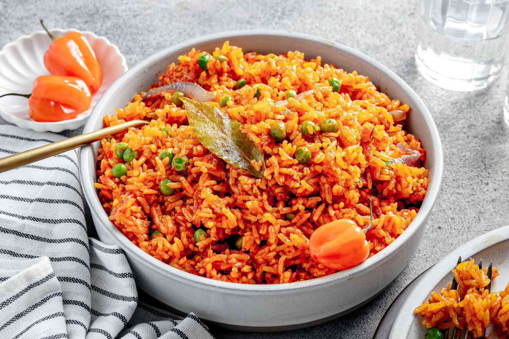
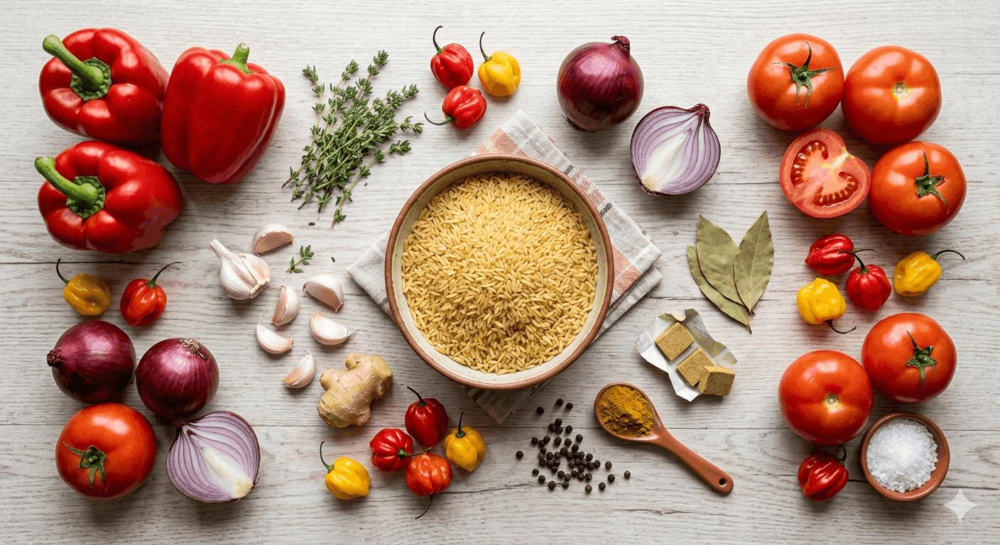
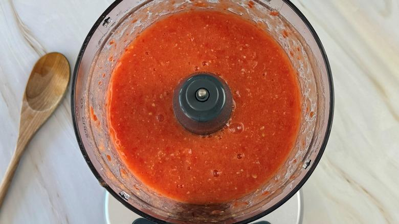
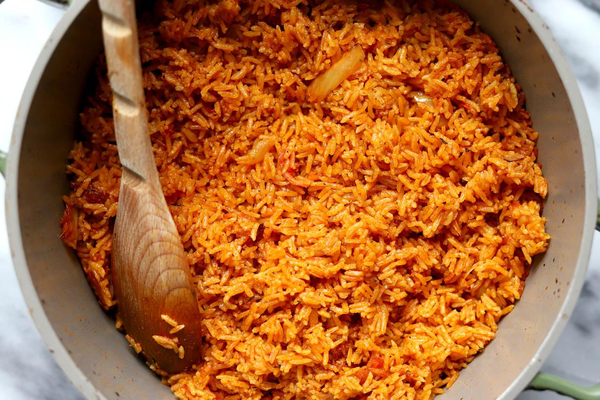
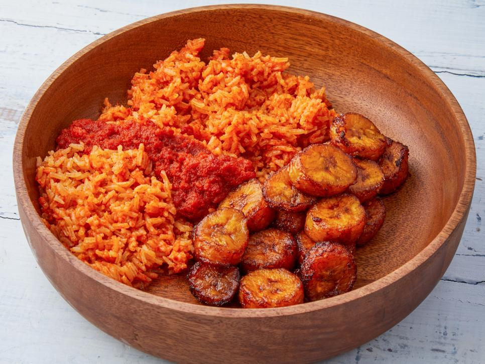

| Ingredient | Steps |
|
|
| Fresh ingredients Tomatoes, peppers, and onions for the sauce. |
Tomato sauce Blended vegetables ready for cooking |
Cooking the rice Rice absorbing the seasoned sauce. |
Ready to serve Finished jollof rice served with fried plantain. |
 |
 |
 |
 " height="139px"> |